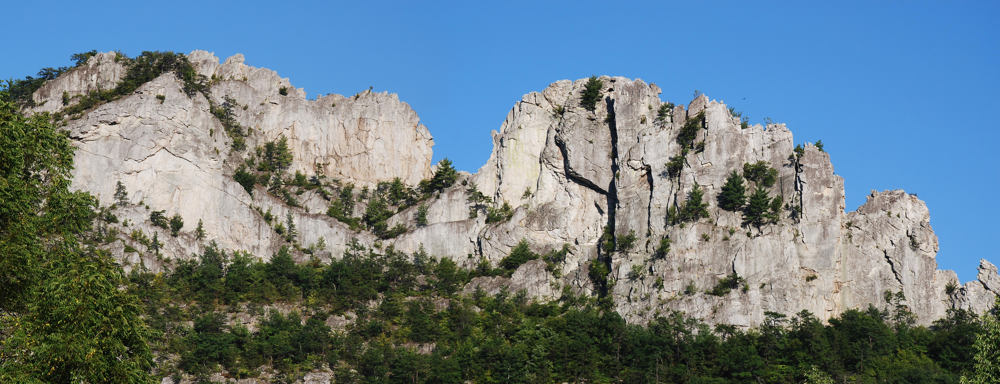

Meet the Terrapin Trail Club
Kyle Ludwig is the president of Terrapin Trail Club (TTC), a student-run outdoors club at the University of Maryland - College Park. From backpacking to spelunking, Kyle is an avid outdoorsman, and he shared with us some information about the club and his experiences hiking.
Terrapin Trail Club (TTC) is a student-run outdoors club within the University of Maryland, providing opportunities for members to go hiking, backpacking, and camping, in the nearby area. The club itself provides equipment so that anyone interested in trying new activities can jump right in. Members often take afternoons or weekends into the mountains and forests of Maryland, Virginia, Delaware, and other surrounding states. On top of exploring the wilderness on-foot, some members of the club also enjoy spelunking, rock climbing, mountain biking, and kayaking.
Kyle Ludwig is the president of Terrapin Trail Club. From backpacking to spelunking, Kyle is an avid outdoorsman, and he was eager to share with us some information about the club and his experiences hiking. Of course, we had to start by asking where the best places to visit nearby are.
I love going to Seneca Rocks, which we do twice a year. We lead a big trip, bringing about 50 people out there — we do all of our activities at once — we call it "intro trip." I don't know if it's necessarily the place, or if it's just the fact that I've gone there 10+ times with completely different groups every time. It's just cool to do all of those things at one place, so that's one of my favorite places to go. I've been backpacking down the Grand Canyon — that was probably my favorite trip I've ever been on. I've also been to Iceland, which was cool to explore. Not a super common place to get to visit, but that wasn't a TTC trip. Those are some of the best places I've been to.

Seneca Rocks, West Virginia, is a great location to enjoy the outdoors, and so it is no wonder that TTC likes to visit every semester. In late September of this year, 45 members of Terrapin Trail Club were able to go on the Intro Trip, either mountain biking, kayaking, rock climbing, or hiking, on top of camping overnight. This is the largest trip that TTC does every semester, and a great way to see what the club is like if you are a newcomer.
For those who prefer to stay closer to campus, options for outdoor exploration can feel very limited. Kyle also shared some information about lesser known local trails that anyone nearby College Park can enjoy.
It's not the best trail in the world, but a lot of people don't realize that Greenbelt Park is five minutes away from here, and it's a great place to be able to get away to. There's nothing spectacular about it, but it exists, and it's an urban setting that is still a lot of fun if you're only able to go for a few hours. There are some nice mountain biking trails up near Beltsville, and Carderock for rock climbing, which is only about a half an hour away. It's cool how many random places there are around here — even in an urban environment.
Visiting local parks and nature paths often provides nice, relaxing experiences that are still similar to exploration out in the wild. An added benefit is that these locations often require little equipment above standard clothing. However, when preparing for larger trips such as TTC’s adventures at Carter Rock or a multi-day backpacking trip along the Appalachian trail, new hikers can often overlook the precautions and equipment that they need to take with them. Even experienced hikers can face serious issues should they find themselves isolated and in need of help. Kyle explained to us that “basic first aid knowledge, being able to call for help, and letting people know where you're going” are essential before heading out on any large trip.
Be very wary of your water intake, food intake, and your feet. Nothing is worse than getting a few days out, especially if you are going on a long backpacking trip (and your feet are killing you), and you find yourself not being able to walk back. You'll need a lot more water and food than you normally would, when you are out on the back country or even on a day hike. You need to make sure you're keeping track of your intake and plan ahead before you go. If you set out food for a day, you need to make sure you eat all of that for the day so you have enough energy.
These tips are simple, yet effective, and should definitely be remembered. Establishing a set of times to eat during a hike, and preparing well-balanced and high-calorie meals, makes eating while adventuring easy. Without a proper diet during trips, you put yourself at risk of exhaustion, dehydration, and illness. Even if you feel energetic during the afternoon, skipping lunch or dinner can leave you exhausted the next morning. This is not only unenjoyable, but can put you in danger if you are alone or far away from society. Kyle had one last bit of advice for beginners who want to start hiking more often:
As a beginner, you need to remember to take it easy and take it slow. If a trail says intermediate your first time, you’ll probably be fine out there, but you still need to make sure you ease into the harder outdoor activities regardless of if you're in good shape. It’s a different skillset, and building your stamina and gear are important. Your feet can take a beating if you have the wrong boots, for example. Even if they fit you they can still be uncomfortable in certain ways, so don't go crazy your first time out, and do some research on what you can expect on that trail. There are plenty of websites and apps around that show you trails in the area and what to expect.
Students who are interested in having great outdoor experiences with other Terrapins are encouraged to attend TTC’s weekly meetings in the Armory on Mondays so that they can learn about new events. The club has a website, which lists all upcoming trips as well as information needed to join the mailing list or get into contact with officers.
TTC is a student-led club, unlike the Maryland Adventure Program, so we don't have professional University of Maryland paid staff as trip leaders. Students are the only ones leading the trips, so I think it’s a lot more of a unique experience, and it’s a great way to find people to hang out with. I transferred [to UMD], and I didn't know more than two or three people when I came here originally. I found out about the club a month or two after I came to Maryland, and that's how I met literally all of my friends at UMD. It's a cool place. And we have all the gear you'd ever need to do anything, so if you don't have any experience, or any gear, its there.